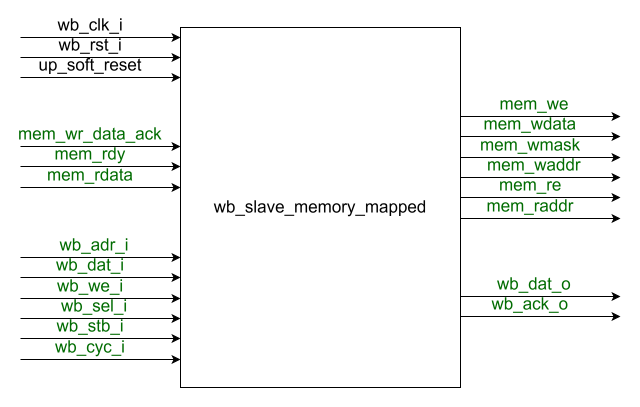
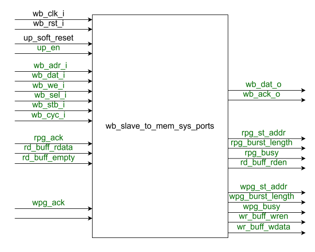
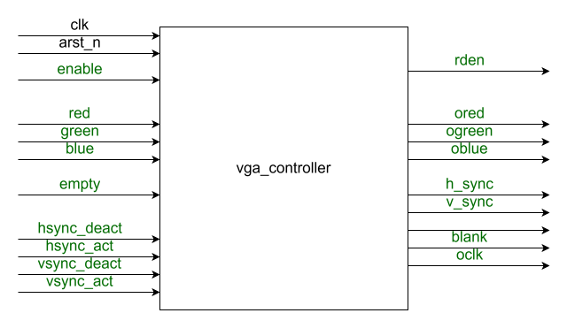
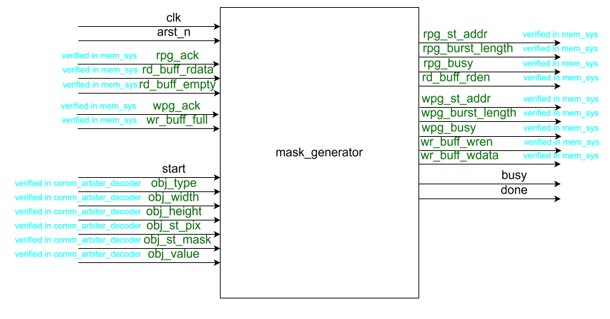
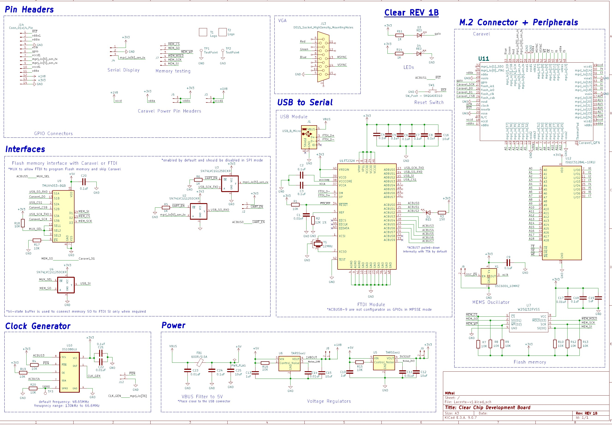
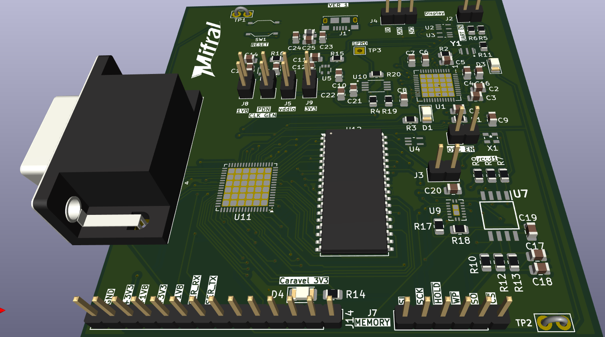
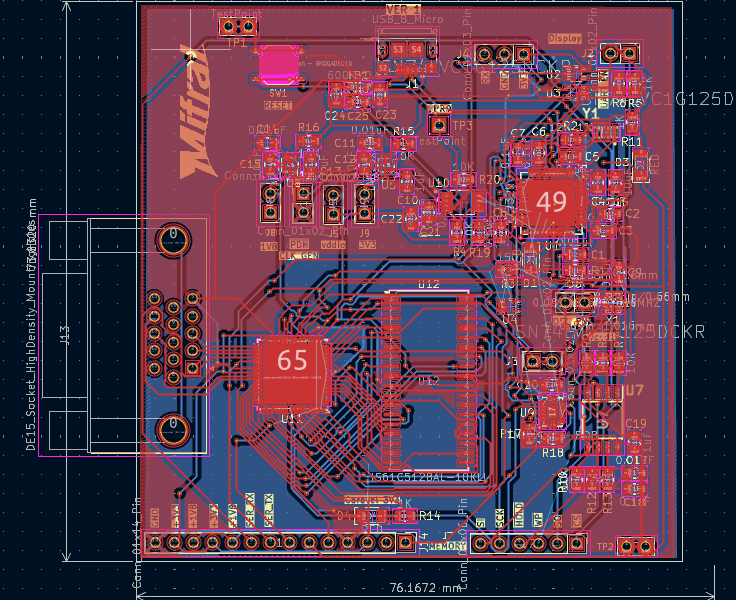

System Development
The development of the Lacerta platform spans the complete hardware and software realization flow, from digital design and verification to physical implementation and system-level integration. This section describes the main stages used to transform the Lacerta concept into a functional platform, including RTL design, verification, layout generation, gate-level validation, PCB development, and the creation of the interface design software.
Together, these activities define the engineering workflow followed to implement, test, and deploy Lacerta as an open-source embedded graphical interface system. Each subsection highlights a different part of this process and explains how the individual development tasks contribute to the final platform.
Lacerta RTL
The Lacerta RTL describes the digital implementation of the custom graphics subsystem integrated in the Caravel user project. At this level, the design is organized as a set of synthesizable hardware modules that implement communication, control, rendering, memory access, and video generation functions.

Figure 5. Block diagram of the Lacerta ASIC inside the Caravel environment. The figure shows how a host computer or the embedded Caravel RISC-V processor sends commands through UART and Wishbone interfaces to the command arbiter, rendering logic, and memory subsystem; the updated frame data is then read by the VGA controller to drive the screen.
At the top level, the Lacerta RTL is integrated in the user_project_wrapper module, which connects the UART interface, the Wishbone processor interface, the internal drawing engine, the memory subsystem, and the VGA output path. The design receives commands either from UART through uart_ip_memory_mapped or from the embedded processor through the Wishbone bus. These transactions are then routed to either the control register space through wb_slave_memory_mapped or to the data-transfer path through wb_slave_to_mem_sys_ports, depending on the address region being accessed.
Inside this structure, the command_arbiter_decoder block interprets configuration writes, updates display timing parameters, enables or resets the processor access path, and generates the drawing-object parameters used by the rendering engine. The mask_generator acts as the hardware drawing core: it reads existing frame data from memory, applies object-specific mask operations, and writes the updated pixels back through the memory-system interfaces. This allows Lacerta to implement graphical-object rendering directly in hardware rather than in software.
The mem_sys module and the underlying ram instance form the storage backbone of the design. They coordinate several concurrent read and write clients, including the host/UART path, the drawing engine, the VGA read path, and the Wishbone processor path, using dedicated read and write buffers together with burst-oriented pattern generators. Finally, the vga_controller continuously reads frame data from memory and converts it into synchronized RGB, horizontal sync, vertical sync, blanking, and pixel-clock signals, producing the final video output displayed on the monitor.
The following subsections identify the main RTL blocks that compose the Lacerta design.
WB Slave to Memory Mapped

Figure 8. RTL block diagram of the wb_slave_memory_mapped module, showing the Wishbone slave interface, the internal memory read/write control signals, and the acknowledge/data return path used for memory-mapped transactions.
The WB Slave to Memory Mapped module implements a synchronous Wishbone slave that translates processor-side memory-mapped transactions into a simpler internal memory access interface. As defined in wb_slave_memory_mapped.v file, the block receives the standard Wishbone signals wb_adr_i, wb_dat_i, wb_we_i, wb_sel_i, wb_stb_i, and wb_cyc_i, and converts them into internal control signals such as mem_we, mem_wdata, mem_wmask, mem_waddr, mem_re, and mem_raddr. This makes the module a protocol bridge between the Wishbone bus and the local control/data path used inside Lacerta.
For write operations, the module captures the incoming Wishbone address, write data, and byte mask, then asserts mem_we to request a write on the internal side. For read operations, it forwards the requested address through mem_raddr and asserts mem_re until read data becomes available. The module uses the handshake signals mem_wr_data_ack and mem_rdy to determine when an internal write or read has completed, and only then asserts the Wishbone acknowledge wb_ack_o. When a read completes, the returning data is copied into wb_dat_o, allowing the processor to retrieve the requested value through the normal Wishbone interface.
In the top-level Lacerta integration, this block is instantiated as wb_slave_memory_mapped_i and is selected when wb_transaction_type routes the Wishbone access toward the MMIO control space. Its outputs are connected to the command_arbiter_decoder, which uses the resulting internal read and write events to update configuration registers, control signals, and system status values. The module also supports reset through both the global Wishbone reset and up_soft_reset, ensuring that pending read or write transactions are cleared whenever the processor-side control domain is reset.
WB Slave to Read/Write Ports

Figure 9. RTL block diagram of the wb_slave_to_mem_sys_ports module, showing how Wishbone read and write transactions are translated into memory-system pattern-generator requests, buffer accesses, and acknowledge/data-return signals.
The WB Slave to Read/Write Ports module implements the Wishbone access path used when the embedded processor must directly read from or write to the Lacerta memory subsystem rather than access control registers. As defined in wb_slave_to_mem_sys_ports.v, this block receives standard Wishbone transactions and converts them into the burst-style interfaces used by the memory system: rpg_st_addr, rpg_burst_length, and rpg_busy for reads, together with wpg_st_addr, wpg_burst_length, wpg_busy, wr_buff_wren, and wr_buff_wdata for writes. In this way, the module serves as a protocol bridge between processor word accesses and the narrower internal memory-system ports.
For write transactions, the module captures the Wishbone address and data, sets wpg_st_addr, forces a single-word burst through wpg_burst_length, and pushes the write data into the write buffer using wr_buff_wren. The transfer is considered complete only after the memory system responds with wpg_ack, at which point wb_ack_o is asserted back to the Wishbone master. For read transactions, the module starts a read pattern generator request by asserting rpg_busy, loads the requested start address, and sets rpg_burst_length to NUM_ACCESSES, which corresponds to the number of memory-system reads required to assemble one full Wishbone word. As data words become available in the read buffer, the block asserts rd_buff_rden, shifts the returned bytes into wb_dat_o, and acknowledges the Wishbone transaction only after the complete word has been reconstructed.
In the top-level Lacerta integration, this module is instantiated as wb_slave_to_mem_sys_ports_i and is selected when wb_transaction_type routes accesses toward the memory-system path instead of the MMIO control path. Its address outputs are offset in user_project_wrapper before being connected into the shared mem_sys structure, allowing the processor to access the memory region used by Lacerta. The module is also gated by up_en and reset by up_soft_reset, so direct processor memory accesses are allowed only when the microprocessor interface is enabled and no pending software reset is being enforced.
VGA Controller

Figure 10. RTL block diagram of the vga_controller module, showing the timing-generation logic, active-frame control, buffer read-enable path, and RGB/VGA output signals used to produce the display image.
The VGA Controller module generates the video timing and pixel-output signals used to display the Lacerta framebuffer on an external monitor. As defined in vga_controller.v, the block receives pixel data through the red, green, and blue inputs together with an empty flag that indicates whether valid display data is available in the input buffer. It also receives configurable timing parameters through hsync_act, hsync_deact, vsync_act, and vsync_deact, allowing the active and inactive horizontal and vertical display intervals to be controlled by register values loaded elsewhere in the design.
Internally, the controller derives a clk_en signal by dividing the 50 MHz system clock by two, producing the 25 MHz pixel-rate timing required for standard 640x480 VGA operation. Horizontal and vertical counters, hcnt and vcnt, advance only when clk_en is active, and they are reset at the end of each row and frame through the eor and eof conditions. From these counters, the module computes the active display regions h_active and v_active, then uses them to generate h_sync, v_sync, and blank. The read-enable output rden is asserted only when the controller is enabled, the pixel clock is active, the current position lies inside the active frame, and the input buffer is not empty, ensuring that framebuffer data is consumed only when it is actually needed for display.
At the output side, the module directly forwards the input color values to ored, ogreen, and oblue whenever the controller is enabled; otherwise, it drives zero values. The sync output is tied low, and oclk exposes the internally generated pixel clock enable used for VGA timing. In the top-level Lacerta integration, this block is instantiated as vga_controller_i and is fed from the memory-system read path through vctrl_buffer_empty and vctrl_buffer_rden, while the horizontal and vertical timing parameters come from the configuration registers conf_logics_0 and conf_logics_1. This makes the VGA controller the final stage of the RTL graphics pipeline, converting stored frame data into real-time display signals.
Command Arbiter Decoder
The Command Arbiter Decoder module implements the control layer that interprets configuration and drawing commands arriving from both the UART path and the processor-side Wishbone MMIO path. As defined in command_arbiter_decoder.v, the block manages the internal control registers conf_logics_0 and conf_logics_1, generates host-side memory access commands, prepares the parameters required by the drawing engine, and controls the enable and reset behavior of the microprocessor memory-access path. In this sense, it acts as the central command-dispatch block for the Lacerta RTL.
On the UART side, the module decodes writes using uart_mem_waddr and maps them into specific control actions. These commands can configure the host write and read pattern generators, push data into the host write buffer, update the VGA timing registers, load the drawing-object fields obj_type, obj_width, obj_height, obj_st_pix, obj_st_mask, and obj_value, trigger the drawing engine through drw_inc_start, request a processor soft reset, or enable the processor-side Wishbone access path through wb_slave_up_en. The UART read path is simpler: host_rd_buff_rdata is returned directly on uart_mem_rdata, and host_rd_buff_rden is driven from uart_mem_re, allowing UART transactions to fetch data from the host read buffer.
On the processor side, the module also decodes writes and reads arriving through the wb_slave_memory_mapped interface. Writes to specific memory-mapped addresses update the same control registers and drawing-object parameters used by the UART path, while reads currently expose status information such as drw_inc_busy. The block asserts wb_slave_mem_wr_data_ack and wb_slave_mem_rdy to complete these MMIO transactions, making the same internal configuration state accessible from the embedded processor. In addition, the module manages up_soft_reset_req and only asserts up_soft_reset when it is safe to do so, specifically when there is no pending memory-system transaction and the drawing engine is idle. This coordination ensures that control commands, drawing requests, and processor-access management are all synchronized in a single RTL block.
On the processor side, the module also decodes writes and reads arriving through the wb_slave_memory_mapped interface. Writes to specific memory-mapped addresses update the same control registers and drawing-object parameters used by the UART path, while reads currently expose status information such as drw_inc_busy. The block asserts wb_slave_mem_wr_data_ack and wb_slave_mem_rdy to complete these MMIO transactions, making the same internal configuration state accessible from the embedded processor. In addition, the module manages up_soft_reset_req and only asserts up_soft_reset when it is safe to do so, specifically when there is no pending memory-system transaction and the drawing engine is idle. This coordination ensures that control commands, drawing requests, and processor-access management are all synchronized in a single RTL block.
Mask Generator

Figure 11. RTL block diagram of the mask_generator module, showing the finite-state control logic, the read and write interfaces to the memory system, and the datapath used to apply object masks and update framebuffer pixels.
The Mask Generator module implements the hardware drawing engine used to modify framebuffer contents according to object parameters loaded by the command decoder. As defined in mask_generator.v, the block receives a start pulse together with the object description fields obj_type, obj_width, obj_height, obj_st_pix, obj_st_mask, and obj_value. From these inputs, it generates the memory-system read and write transactions required to update the selected region of the frame. The module exposes its internal progress through the busy, done, and ostate signals, making it possible to monitor the drawing process from verification or higher-level control logic.
Internally, the block is implemented as a finite-state machine that performs a read-modify-write cycle on the framebuffer. When a new operation starts, it initializes the read pattern generator (rpg_*) and write pattern generator (wpg_*) addresses from the object start position and object dimensions, then processes the target region row by row. Depending on the selected obj_type, the module applies one of several drawing modes, including boolean objects, horizontal incremental objects, vertical incremental objects, graph objects, and mask-based objects. For mask-based objects, it first reads mask data from memory and stores it locally before applying it to the target pixels.
As pixel data is returned through rd_buff_rdata, the module decides how to modify each bit based on the current row, column, object type, and mask contents. The updated pixel value is then written back through wr_buff_wdata and wr_buff_wren, while rpg_busy and wpg_busy remain active until the memory system acknowledges completion through rpg_ack and wpg_ack. In the top-level Lacerta integration, the block is instantiated as mask_generator_i and connected to dedicated read and write channels of the shared mem_sys module. This makes the mask generator the core hardware renderer of Lacerta, responsible for converting object-level commands into direct framebuffer updates.
Memory System
The Memory System module implements the shared data path that connects the different Lacerta clients to the main framebuffer memory. At a general level, mem_sys.sv coordinates read and write traffic between the host/UART path, the VGA stream, the mask generator, and the processor-side access path, while exposing a single read interface and a single write interface toward the main RAM. Instead of allowing each client to access memory directly, the subsystem organizes transfers through dedicated read and write channels that are buffered and scheduled internally.
The main structural blocks of this subsystem are buffers, buffers_filler, and buffers_discharger. The buffers module instantiates the FIFO storage used to decouple the clients from the main memory timing, providing independent write buffers and read buffers for each channel. On the read side, buffers_filler monitors the active read pattern generator requests, issues memory reads through main_mem_rden and main_mem_rd_addr, and stores the returning data into the appropriate read buffer. On the write side, buffers_discharger monitors the active write pattern generator requests, removes data from the write buffers, and forwards it to memory through main_mem_wren, main_mem_wr_addr, and main_mem_wr_data.
From a functional point of view, the memory system acts as the arbitration and buffering backbone of Lacerta. Read clients provide starting addresses, burst lengths, and busy flags through the rpg_* signals, while write clients provide equivalent burst-control information through the wpg_* signals together with buffered write data. The memory system acknowledges each completed burst through rpg_ack and wpg_ack, and it uses the buffer full, empty, and half-empty signals to decide when data should be fetched from RAM or committed back to RAM. The underlying ram module then serves as the actual frame-storage element, while the memory system around it ensures that multiple producers and consumers can share that storage in an orderly and efficient way.
UART
The UART block used in Lacerta is integrated through the top-level module uart_ip_memory_mapped, which provides a bridge between the external serial interface and the internal memory-mapped control path of the system. As defined in uart_ip_memory_mapped.v, this wrapper exposes a simple internal interface composed of mem_we, mem_wdata, mem_waddr, mem_re, mem_raddr, mem_rdata, and mem_rdy, while also connecting directly to the physical serial signals rx and tx. In this way, the UART subsystem presents incoming serial commands as internal read and write transactions that can be consumed by the rest of the Lacerta control logic.
At a general level, the module is divided into two major parts. The first part, implemented by uart_ip_memory_mapped_ctrl_fsm, interprets the UART-accessible control and status information and converts the serially received command stream into memory-mapped operations. The second part, instantiated as uart_ip, implements the UART transceiver functionality itself, including transmission, reception, configuration, and status handling. By combining these two layers, the top module allows an external host to configure Lacerta, write drawing parameters, and read back status or data through a standard UART connection, while hiding the lower-level serial protocol details from the rest of the RTL.
Lacerta Verification
A comprehensive verification methodology was implemented to ensure the correct functionality and robustness of the Lacerta system across different levels of abstraction. The verification process was structured in a progressive manner, starting from individual IP blocks and advancing toward full system validation under realistic operating conditions.
The verification flow was divided into four main stages.
-
First, IP-level verification was performed on the UART communication subsystem using a dedicated testbench. This environment incorporated a Bus Functional Model (BFM) capable of generating fully randomized transactions, allowing extensive stimulus coverage while executing real-time checks during operation. This stage ensured reliable communication behavior under diverse conditions.
-
In the second stage, the memory subsystem (memory_system) was verified using a dedicated testbench that included non-synthesizable logic to generate randomized read and write accesses. Each module within the subsystem was equipped with dedicated checkers, and a reference model with forward-progressing checkers was used to validate data integrity and correct memory behavior throughout the transactions.
-
The third stage focused on full system verification, where the Lacerta platform was exercised through UART-based transactions using the previously developed BFM. During this phase, randomized interface configurations were generated, including variations in control types and sizes under constrained random conditions. All system-level checkers remained active to ensure consistency and detect any functional discrepancies.
-
In the fourth stage, system-level validation was extended by loading binary interface configurations generated by a Python-based application. This stage closely represents real-world operation, as the system processes actual interface descriptions. Additionally, these tests were also executed at the gate-level simulation (GLS) stage to verify timing-aware behavior and ensure post-synthesis correctness.
Beyond simulation-based verification, extensive FPGA emulation was conducted to validate the system in a hardware environment. Multiple interfaces were generated using the Python application, programmed into the Lacerta system via the UART controller, and successfully displayed on a monitor through the VGA output. This hardware validation step provided strong evidence of correct system integration and real-time performance.
Overall, this multi-stage verification approach ensures high confidence in the correctness, robustness, and practical functionality of the Lacerta platform.
WB Slave to Memory Mapped
The verification plan for the WB Slave to Memory Mapped block focuses on protocol correctness, proper memory-side control generation, and legal read/write handshaking.
- Verify that the Wishbone slave acknowledges only when a valid master request is active.
- Verify that an active Wishbone request is acknowledged within the maximum allowed number of clock cycles.
- Verify that
wb_ack_ois asserted for only one clock cycle per transaction. - Verify that address, data, and control signals remain stable while a request is active and has not yet been acknowledged.
- Verify that
mem_weis asserted, andmem_reis not asserted, during Wishbone write requests. - Verify that
mem_reis asserted, andmem_weis not asserted, during Wishbone read requests. - Verify that
wb_cyc_iandwb_stb_iare deasserted only afterwb_ack_o, preventing overlapping requests. - Verify that
mem_waddr,mem_wdata, andmem_wmaskcorrectly reflect the Wishbone address, data, and byte-select signals during write requests. - Verify that
mem_raddrcorrectly reflects the Wishbone address during read requests. - Verify that
wb_dat_oreturns the same data received from memory when a Wishbone read request completes. - Verify that
mem_wr_data_ackcan be asserted only while a Wishbone write transaction is in progress. - Verify that
mem_rdycan be asserted only while a Wishbone read transaction is in progress.
WB Slave to Read/Write Ports
The verification plan for the WB Slave to Read/Write Ports block checks correct Wishbone behavior, proper coordination with the memory-system ports, and correct sequencing of read and write transactions initiated by the microprocessor side.
- Verify that the Wishbone slave acknowledges only when a valid master request is active.
- Verify that
wb_ack_ois asserted for only one clock cycle per transaction. - Verify that address, data, and control signals remain stable while a request is active and has not yet been acknowledged.
- Verify that
wpg_busyis asserted only for Wishbone write requests and remains clear for read requests. - Verify that
wpg_busyremains asserted untilwpg_ackis received. - Verify that
rpg_busyis asserted only for Wishbone read requests and remains clear for write requests. - Verify that
rpg_busyremains asserted untilrpg_ackis received. - Verify that
wb_cyc_iandwb_stb_iare deasserted only afterwb_ack_o, preventing overlapping requests. - Verify that
up_endoes not change while a read or write process is in progress. - Verify that
up_soft_resetdoes not change while a read or write process is in progress. - Verify that
wpg_st_addr,wpg_burst_length, andwr_buff_wdataare correctly loaded during Wishbone write requests. - Verify that
wpg_st_addr,wpg_burst_length, andwr_buff_wdataremain stable untilwpg_ackis asserted. - Verify that
rpg_st_addrandrpg_burst_lengthare correctly loaded during Wishbone read requests. - Verify that
rpg_st_addrandrpg_burst_lengthremain stable untilrpg_ackis asserted. - Verify that
wr_buff_wrenis asserted only during Wishbone write requests and only once per write transaction. - Verify that
rd_buff_rdenis asserted only during Wishbone read requests and exactlyNUM_ACCESSEStimes per read transaction. - Verify that
rpg_ackcan be asserted only while a master read operation is ongoing. - Verify that
wpg_ackcan be asserted only while a master write operation is ongoing. - Verify that a Wishbone read transaction completes when
rpg_ackis asserted. - Verify that a Wishbone write transaction completes when
wpg_ackis asserted. - Verify that the read buffer is empty whenever no Wishbone read operation is in progress.
- Verify that the data returned at the end of a Wishbone read matches the data delivered by the memory system.
- Verify that Wishbone read and write transactions can start only when the microprocessor interface is enabled and not in soft reset.
VGA Controller
The verification plan for the VGA Controller block checks video-read behavior, RGB propagation, timing-parameter correctness, and compliance with the expected 640x480 @ 60 fps output timing.
- Verify that
rdenis not asserted when the buffer is empty. - Verify that
rdenis asserted whenever the active video frame is being generated. - Verify that when
rdenis asserted, the incoming red, green, and blue data are correctly propagated toored,ogreen, andoblue. - Verify that
hsync_deact,hsync_act,vsync_deact, andvsync_actcontain the expected timing values. - Verify that
h_synchas the correct period for 640x480 at 60 fps according to the active and deactivated horizontal timing constants. - Verify that
v_synchas the correct period for 640x480 at 60 fps according to the active and deactivated vertical timing constants. - Verify that
blankis asserted only when the frame is active. - Verify that the output clock has an approximate frequency of 25 MHz.
Command Arbiter Decoder
The verification plan for the Command Arbiter Decoder block checks the validity of drawing commands, busy-state behavior, and the control rules used when enabling or resetting the memory-access path.
- Verify that when
drw_inc_startis asserted, the drawing object type is within the valid range and both object width and object height are greater thanMIN_OBJECT_WIDTH_HEIGHT. - Verify that asserting
drw_inc_startcausesdrw_inc_busyto transition from0to1. - Verify that the drawing data sent to the rendering circuit remains stable while
drw_inc_busyis asserted. - Verify that
drw_inc_busyis not asserted for longer thanDRW_BUSY_TIMEOUTclock cycles. - Verify that
wb_slave_up_enis asserted when the UART write command address is18. - Verify that
wb_slave_up_encan be deasserted only when no memory-system access transaction is in progress. - Verify that
up_soft_resetcan be asserted only when no memory-system access transaction is in progress.
Mask Generator
The verification plan for the Mask Generator block validates correct start/busy sequencing and ensures that internal read/write activity occurs only while the block is actively processing a drawing operation.
- Verify that asserting
startcausesbusyto transition from0to1. - Verify that
startcannot be asserted whilebusyordoneis already asserted. - Verify that when
busyis deasserted,rpg_busyandwpg_busyare both low andrd_buff_emptyis high. - Verify that
rd_buff_rdencannot be asserted whenrd_buff_emptyis high. - Verify that
wr_buff_wrencannot be asserted whenwr_buff_fullis high. - Verify that
rpg_busy,wpg_busy,rpg_ack,wpg_ack,wr_buff_full,rd_buff_rden, andwr_buff_wrencan be asserted only whilebusyis high.
UART
Memory System
Lacerta Layout
WB Slave to Memory Mapped
WB Slave to Read/Write Ports
VGA Controller
Command Arbiter Decoder
Mask Generator
Memory System
UART
Lacerta Gate Level Simulation
Lacerta PCB
The Lacerta PCB provides the physical platform used to power, configure, and evaluate the Lacerta hardware. At a general level, the board brings together the Caravel device, external memory, communication interfaces, clock generation, power regulation, and display connectivity required to operate the Lacerta graphics subsystem as a complete embedded system. In addition to hosting the main integrated circuits, the board exposes test points, headers, and peripheral connectors that simplify bring-up, debugging, and laboratory validation.
From the schematic point of view, the board is organized into clearly separated functional domains. These include the Caravel interface, the USB-to-serial path used for configuration and communication, the flash-memory interface, the clock-generator circuit, the power-supply section, and the display/output connectors. This partitioning makes the design easier to validate and reflects the main operational needs of Lacerta: receiving commands, storing data, accessing the Caravel platform, and driving an external display.

Figure 12. Schematic of the Lacerta development board, showing the main functional blocks including the Caravel connection, USB-to-serial interface, flash memory, clock generator, power regulation, and display/output connectors.
The PCB implementation translates this schematic into a compact development board that places the major components and user interfaces in accessible locations. The 3D view highlights the physical arrangement of the VGA connector, the Caravel-related devices, the USB/FTDI section, memory devices, headers, and support circuitry. This representation is useful for understanding the mechanical integration of the board and for checking connector placement, component accessibility, and assembly feasibility during the hardware-development process.

Figure 13. 3D view of the Lacerta PCB, illustrating the assembled component placement, external connectors, and overall physical organization of the development board.
The routed PCB layout shows how the electrical connections between these subsystems are realized on the board. It provides a detailed view of component placement, copper routing, and board dimensions, and it reflects the practical constraints of signal integrity, power distribution, and connector accessibility. Together, the schematic, 3D rendering, and final layout document the complete PCB-development flow for Lacerta, from circuit definition to manufacturable board implementation.

Figure 14. PCB layout of the Lacerta development board, showing the routed interconnections, component placement, and board geometry used to implement the final hardware platform.
Lacerta Interface Design Software
The Lacerta Interface Design Software was developed as a desktop application that allows users to create, edit, export, and deploy graphical interfaces for the Lacerta hardware platform. The current implementation is written in Python using PySide6, and its main source file, main.py, integrates the complete application flow, including the user interface, the graphics-editing canvas, scene serialization, export generation, and serial communication with the target hardware. The software was designed not only as a drawing tool, but as a complete front-end for the Lacerta development flow, connecting interface creation directly with hardware execution.
At the architectural level, the tool is organized around a graphics-scene-based editor built with QGraphicsScene and QGraphicsView. The CanvasScene class manages the editable design space, including canvas size, grid display, background image support, snapping, and item placement. Individual graphical elements are represented by custom IndicatorItem objects, which are movable and resizable and store the properties required to reconstruct the interface later. The scene also supports grouping and a layer model, making it possible to organize complex interfaces with explicit drawing order and visibility control. This editor structure gives the application the flexibility of a general design environment while still keeping the internal representation aligned with the needs of the Lacerta hardware.
One of the most important parts of the software is its indicator rendering engine. The application includes a large collection of drawing routines that render different types of interface components, such as bars, graphs, seven-segment displays, gauges, warning indicators, switches, text labels, structural elements, and geometric shapes. These drawing functions operate through Qt painting primitives and are used both for real-time visual preview inside the editor and for off-screen rendering during export. This approach allowed the development of a consistent software-side representation of the same kinds of visual elements that the Lacerta hardware is expected to display, while also enabling rapid prototyping of new interface widgets.
The development of the software also included a properties and interaction layer that turns the canvas into a practical design tool. The PropertiesPanel, PalettePanel, LayerPanel, and related dialogs provide mechanisms for selecting indicators, editing visual properties, assigning layers, changing canvas parameters, and managing scene behavior. A toolbar and tabbed main window (MainWindow) complete the editing environment by providing commands for scene creation, loading, saving, export, serial connection, and upload. This overall interface design makes the application function as a lightweight CAD-style editor specialized for embedded graphical HMIs.
Another major stage in the development was the creation of the serialization and export flow. Scene content is converted into structured dictionaries through helper routines such as _serialize_item, then saved as JSON so that the interface can be reloaded and edited later. During export, the tool generates the assets needed by the Lacerta platform, including rendered images and binary or textual data representations derived from the current scene. The export path is therefore not limited to storing editor state; it also prepares the interface information in a form that can be consumed by the Lacerta hardware and firmware flow.
The software was further extended with a deployment path to hardware through serial communication. The SerialLoader class implements memory-oriented UART transactions that allow the application to send masks, background images, and compiled interface-related data directly to the target platform. The upload process is executed asynchronously through UploadWorker, preventing the graphical interface from blocking during long transfers. In this way, the software does not stop at design-time preview: it acts as the operational bridge between the interface editor and the real Lacerta system running on hardware.
Finally, the development of the Lacerta Interface Design Software incorporated supporting features that improve usability and reproducibility, such as persistent settings, toolchain-path checking, scene management, canvas background handling, and multi-depth export support. Together, these elements make the application a key part of the Lacerta ecosystem: it is the environment where interfaces are conceived, visually assembled, converted into deployable assets, and finally transferred to the embedded graphics hardware for execution.